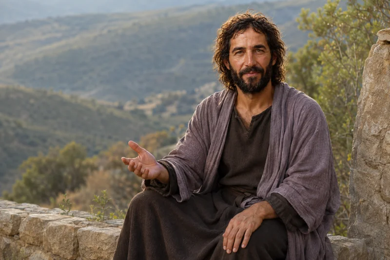
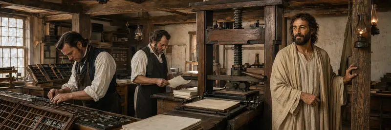
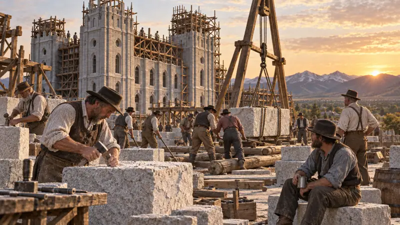
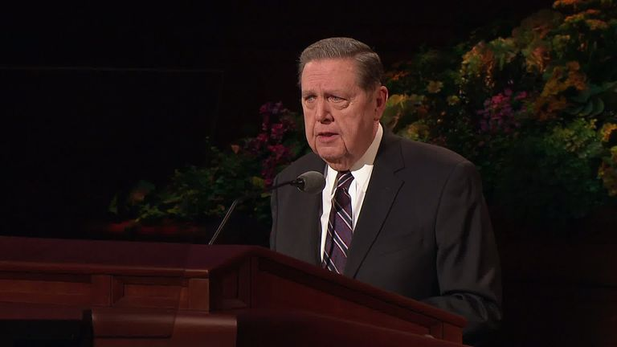
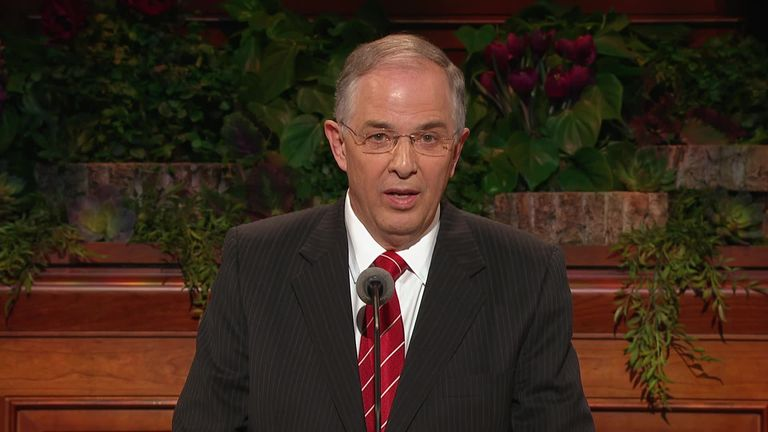

God
Is there a God who is our Father? Consider what scripture, experience, creation, prayer, and revelation contribute to this question.
Open studyStudy foundational questions, honest inquiry, and revelation through Elder Lawrence E. Corbridge’s January 22, 2019 BYU devotional. Read the complete source beside this focusChrist study guide.
Watch and study · Scripture Central
 ▶ Watch the trailer
▶ Watch the trailerExplore Scripture Central’s series on enduring discipleship in Jesus Christ. The series expands on the message of Elder Corbridge’s 2019 BYU devotional, which you can study below.
Begin with episode 1, “Will You Stand, or Will You Go Away?” Or open the publisher’s full playlist to choose from its available videos.
Published by Scripture Central. The playlist on YouTube contains the publisher’s current selection. About the series and speaker.
Questions, knowledge, and revelation
In his January 22, 2019 BYU devotional, Elder Lawrence E. Corbridge asks how disciples can remain grounded when they encounter difficult claims, uncertainty, or an overwhelming number of questions. His answer is not to stop asking. It is to understand which questions are foundational, use every honest way of learning available, and seek a confirming witness through the Holy Ghost.
The address identifies four foundational questions. These are presented as the questions that give spiritual orientation to the many historical, doctrinal, cultural, and personal questions a disciple may continue to examine.
Choose a question to open its complete study. Read a passage in context, explore its video resources, then use the connected studies to continue at your own pace.
Is there a God who is our Father? Consider what scripture, experience, creation, prayer, and revelation contribute to this question.
Open study
Is Jesus Christ the Son of God and Savior of the world? Let His identity, teachings, Atonement, and Resurrection remain central.
Open study
Was Joseph Smith a prophet? Study the historical record, revealed scripture, prophetic claims, fruits, and your own spiritual inquiry.
Open study
Is The Church of Jesus Christ of Latter-day Saints God’s kingdom on the earth? Examine its authority claims, covenants, doctrine, mission, and fruits.
Open studyThe talk describes four methods that begin with a question. Together they invite action, careful reasoning, disciplined study, and revelation rather than dependence on a single kind of evidence.
Form a question, act or experiment where appropriate, observe the result, and revise what you think. Gospel truth can be tested through faithful practice and its fruits.
Gather relevant evidence, organize it, weigh it fairly, notice assumptions, and draw conclusions that remain proportionate to what the evidence supports.
Read deeply and in context. Compare scripture, original records, responsible scholarship, and authoritative teaching rather than relying on isolated summaries.
Seek knowledge through the Holy Ghost. Prayer and revelation do not remove the need to act, reason, or study; they address spiritual truth through the Spirit of God.
Use this sequence with a question you genuinely carry. It creates room for evidence and uncertainty while keeping your relationship with Jesus Christ visible.
Elder Corbridge closes with Doctrine and Covenants 6:36. The surrounding revelation to Oliver Cowdery adds a compassionate pattern for seeking and standing.
Verses 22–23 invite Oliver to remember the peace that came when he sought a witness. Spiritual memory can be evidence without ending every later question.
Verses 33–34 join faithful action with reassurance. A seeker can continue doing good while understanding develops.
Verses 36–37 direct every thought toward Christ and answer fear with His presence, sacrifice, and promise of a place with Him.
These passages are used in the address or closely support its pattern of asking, studying, receiving light, and standing on revelation. Open one passage at a time and record what it contributes to the question you are studying.
Continue the study with three apostolic messages that make room for honest questions while inviting deliberate faith and forward movement in Jesus Christ.

General conference
Elder Jeffrey R. Holland invites disciples to acknowledge questions honestly while beginning with the faith they already have.

General conference
Elder Neil L. Andersen teaches that honest questions matter and that faith grows through deliberate choices, sincere study, and seeking answers from God.
General conference
President Russell M. Nelson offers five actions for building spiritual momentum and moving forward through uncertainty and opposition.
Which primary question most shapes the way I understand the others? Am I asking a secondary question to decide more than its evidence can establish? Which method of learning have I used well, and which have I neglected? What do I know from experience, evidence, study, or the Holy Ghost? What can remain honestly unresolved while I continue looking to Christ?
Which question needs clearer wording? What do I know from a source, what am I inferring, and what still needs patient study?
This guide draws from the BYU address and the scripture passages linked above. The inquiry practice is a focusChrist study aid.